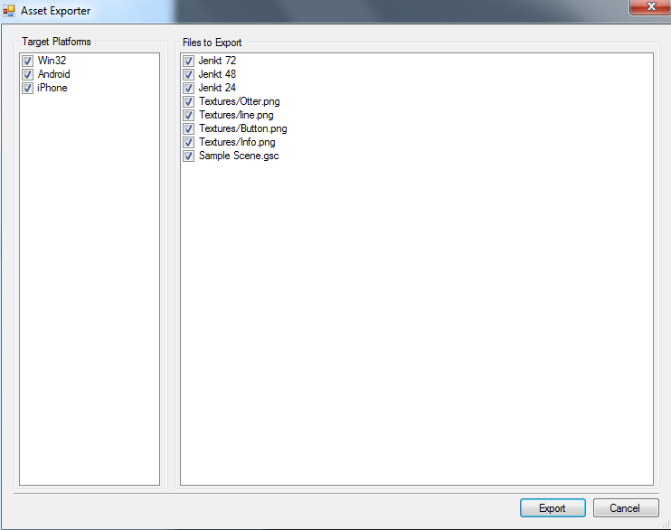
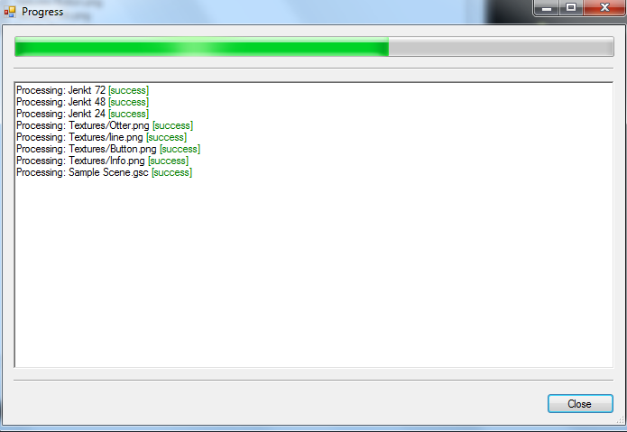

The final step in building a UI in Otter is to export it. To export your UI, simply select the scenes you want to export, right-click on them and select Export. This will bring up the Asset Exporter:

The Asset Exporter lists the target platforms to export to, as well as the files it will process. Check and uncheck files/targets you want included and excluded in the export process.
Once ready, hit the Export button. The export progress window will come up, indicating the current export progress and status:

All files will be exported to the platform's output folder, as specified in the Platform's properties (see Setup and Installation).
Created with the Personal Edition of HelpNDoc: Generate EPub eBooks with ease